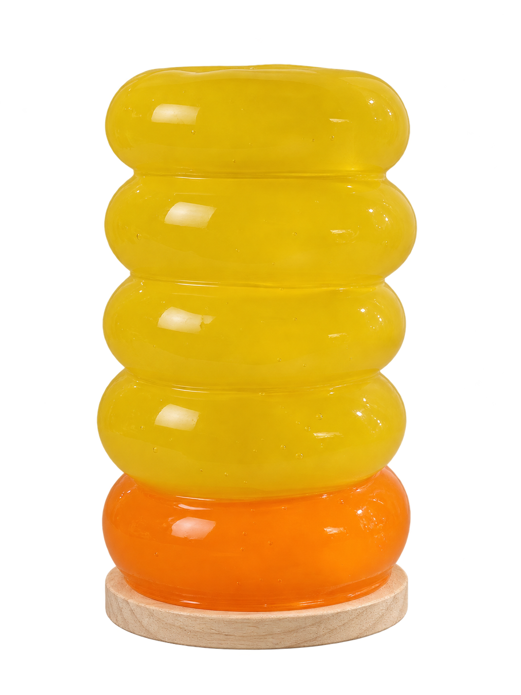

chacos
●
Menu
Coleção
Quem somos
Contato
Início
Coleção
Quem somos
Contato
Perguntas frequentes
OBJETOS DE LUZ / PRIMEIRA EDIÇÃO
Formas livres.
Luz que transforma.
Do balão à resina.
Uma nova forma de iluminar.
Conheça a CHACOS 01

•──
Explore a luminária